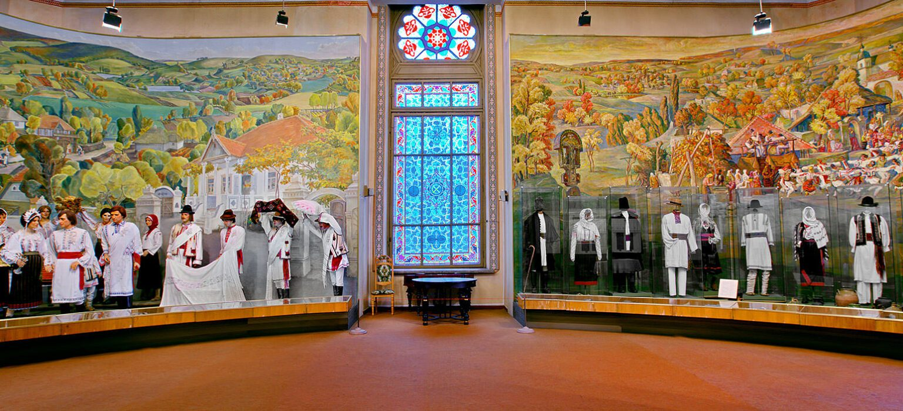
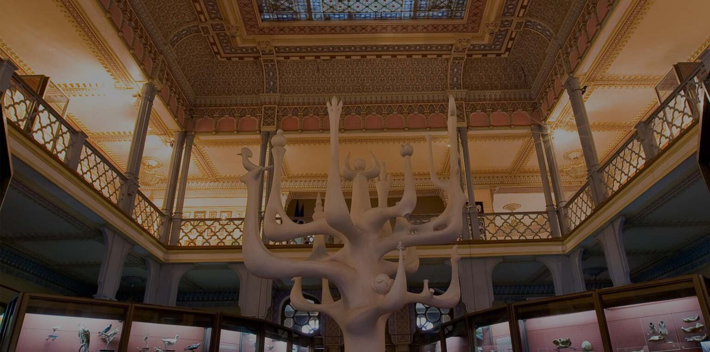
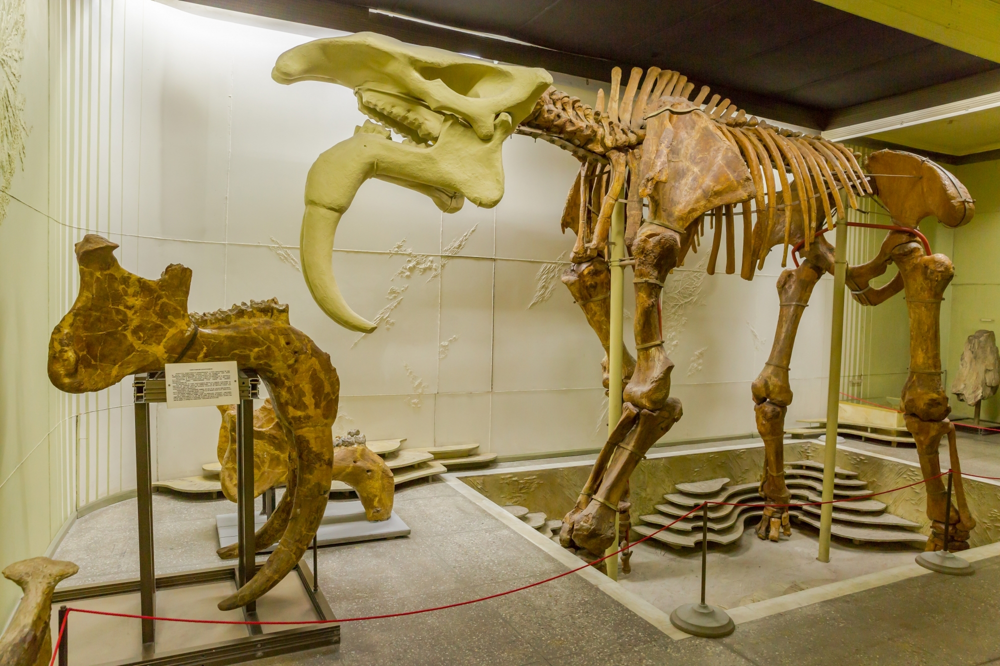
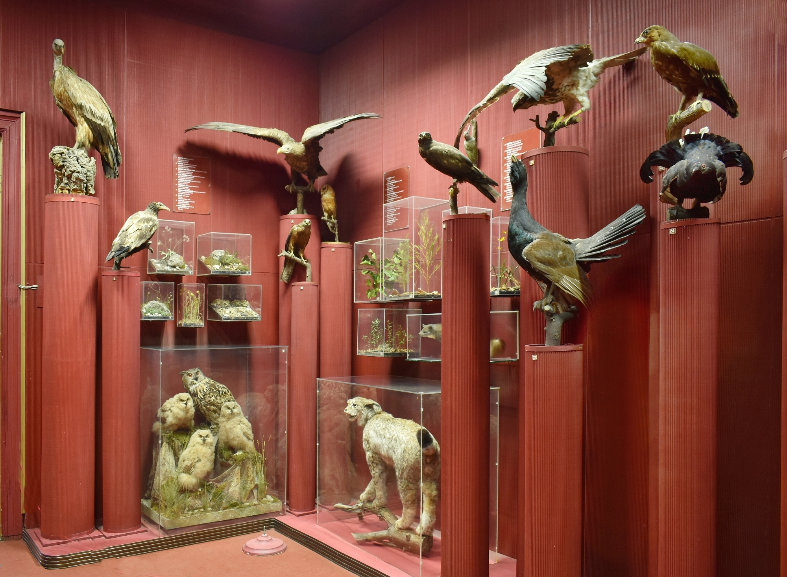
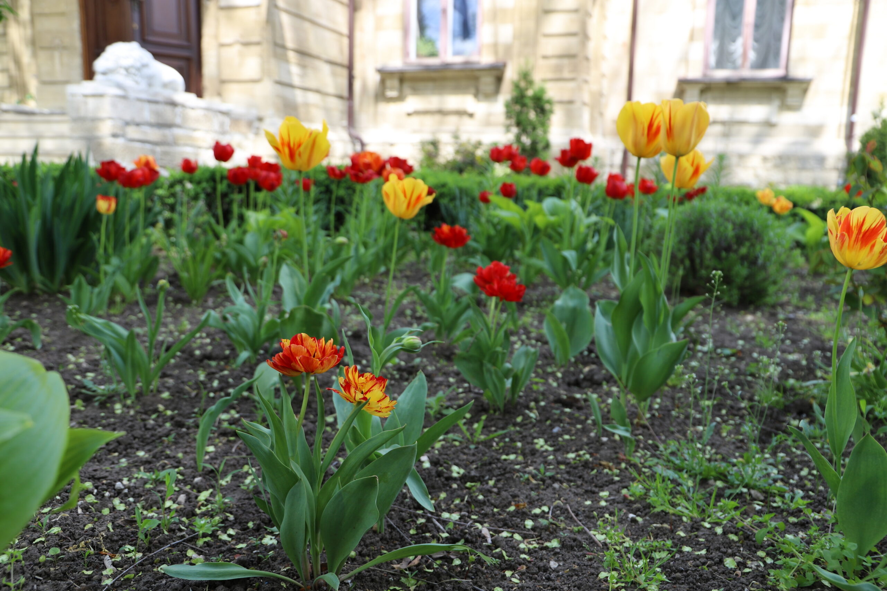
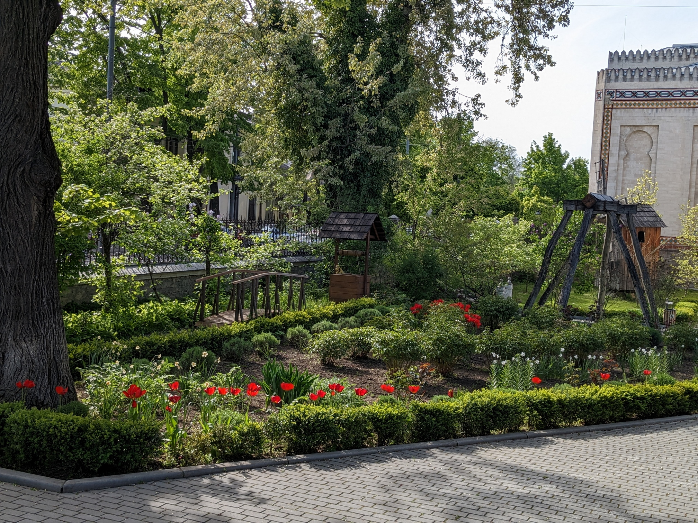
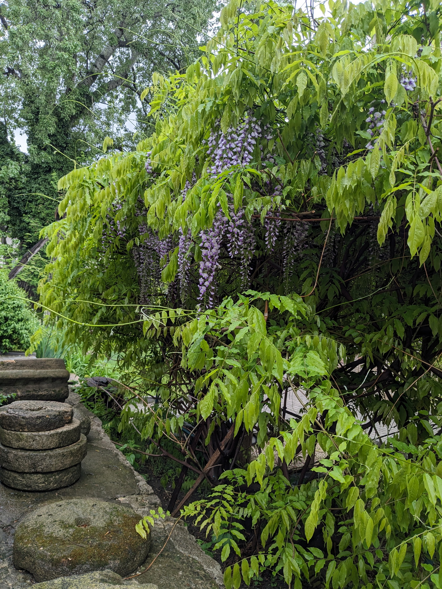
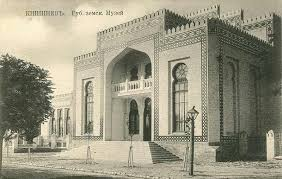
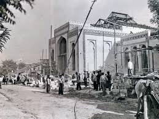
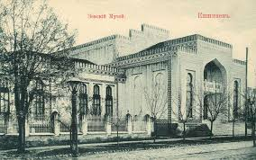

Expoziția permanentă
Expoziția permanentă, intitulată “Natura. Omul. Cultura”, desfășoară o prezentare captivantă pe o suprafață de 2000 m2, dezvăluind evoluția relației dintre Om și Natură în diferite etape ale dezvoltării societății.
Aceasta explorează evoluția lumii organice, dinamica utilizării resurselor naturale și sinteza creatoare a relației dintre Om și Natură.
De asemenea, aduce în discuție situația ecologică din Republica Moldova și propune căi de ameliorare a acesteia.
Expoziția oferă o incursiune fascinantă în modul în care interacțiunea dintre om și mediu s-a transformat de-a lungul timpului, evidențiind schimbările în comportamentul uman și impactul asupra mediului înconjurător.
Prin intermediul celor 2000 m2, vizitatorii sunt ghidați prin diverse aspecte ale acestei evoluții, ilustrând cum societatea și mediul înconjurător s-au influențat reciproc de-a lungul istoriei.
  Expoziția nu doar documentează evoluția acestei relații complexe, ci și abordează situația ecologică actuală din Republica Moldova, evidențiind provocările și prezentând soluții pentru îmbunătățirea acesteia.
Este un demers educativ și reflexiv, care încurajează vizitatorii să înțeleagă mai bine legăturile intricate dintre om, natură și cultură și să contribuie la protejarea mediului înconjurător.
Grădina Botanică a Muzeului Național de Etnografie
Grădina Botanică a Muzeului Național de Etnografie și Istorie Naturală a fost înființată la începutul secolului XX, pe baza unei grădini-parc plantate în acest teritoriu în mijlocul secolului al XIX-lea.
Scopul principal al acestei grădini a fost să prezinte, într-o formă redusă, flora spontană din toate zonele Basarabiei.
Constituind o componentă esențială a Muzeului, Grădina Botanică completează expozițiile muzeale prin prezentarea vieții vegetale “pe viu”.
Cu o suprafață de 0,75 hectare, Grădina Botanică cuprinde sectoare reprezentând tipurile principale de vegetație silvică, de stepă, acvatică și de pajiște din teritoriul Republicii Moldova, inclusiv plante rare și aflate în pericol de dispariție.
 Această oază verde oferă vizitatorilor ocazia de a explora și înțelege diversitatea florei autohtone, susținând în același timp scopurile educative ale muzeului.
Prin prezentarea în natură a plantelor specifice diferitelor ecosisteme din regiune, Grădina Botanică contribuie la sensibilizarea publicului față de importanța conservării biodiversității și promovează conștientizarea asupra valorii resurselor naturale locale.
Istoria Muzeului Național de Etnografie și Istorie
Muzeul, înființat în anul 1889, își are rădăcinile în organizarea Expoziției Agricole și Industriale de către Zemstva Basarabiei.
Această expoziție a servit drept fundament pentru înființarea instituției muzeale, stabilindu-l drept cel mai vechi muzeu din Republica Moldova.
În origini, acesta a fost conceput ca un Muzeu Agricol, dar pe parcursul existenței sale îndelungate, și-a extins progresiv sfera de activitate, adăugând colecții care reflectă istoria naturală, starea actuală a naturii, evoluția societății umane și cultura tradițională din Basarabia și, ulterior, din Republica Moldova.
Cu un patrimoniu bogat de aproximativ 135 de mii de piese, muzeul găzduiește colecții variate care pun în evidență lumea animală și vegetală, bogățiile naturale ale teritoriului, precum și îndeletnicirile populației.
Expozițiile create de muzeu au contribuit la evidențierea diversității și frumuseții regnului animal și vegetal, evidențiind resursele naturale ale regiunii și ilustrând activitățile tradiționale ale populației.
 Piesele din colecțiile muzeului au fost expuse în cadrul diferitelor expoziții desfășurate în numeroase țări din Europa, Asia, America și Africa, contribuind astfel la promovarea culturii și istoriei locale la nivel internațional.